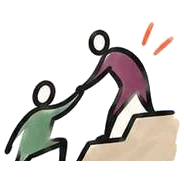

заглушка
заглушкаНасколько устойчивваш бизнес?
10 простых вопросов по 5 направлениям — и вы увидите, что мешает вашему бизнесу стать устойчивым и с какого шага начать. Если бизнеса пока нет — отвечайте про идею. Куратор разберёт результат бесплатно.
Самый короткий луч — первое место, которое стоит разобрать.
Что лучше всего описывает вашу ситуацию сейчас?
Бизнес ещё не работает? Отвечайте про свою идею или план.
По каждому направлению два вопроса. На профиль идёт меньший из двух ответов.
Как это проявляется у вас?
Отметьте всё, что узнаёте. Можно ничего не выбирать.
Профиль вашего бизнеса
Самый короткий луч — первое место, которое стоит разобрать.
Явно слабого места не видно. Куратор поможет найти, что сейчас сильнее всего сдерживает следующий этап роста.
Вопросы показали, каким вы видите свой бизнес. Задания покажут, какой он на самом деле. Без них куратор увидит только половину картины — с ними разбор будет точнее и полезнее.
Выполнено: 0 из 5↓ затем — отправьте всё куратору

Шаг 2 из 2 · бесплатноОтправьте результат куратору
Сам по себе профиль — это только картинка. Куратор посмотрит ваши ответы и голосом объяснит, что с этим делать.
Где вы сейчасСтадия бизнеса, кто из семьи участвует и что мешает
Что мешает больше всегоГлавная проблема и её причина
С чего начатьПервый шаг, который даст результат

Проверьте себя на деле
Выполнено 0 из 5Эти задания показывают реальную ситуацию лучше, чем обычная самооценка. Пишите коротко и честно.
Чат с куратором открыт
Результат и задания уже набраны в сообщении. Осталось нажать «Отправить» в Telegram — и куратор возьмёт вас на разбор.